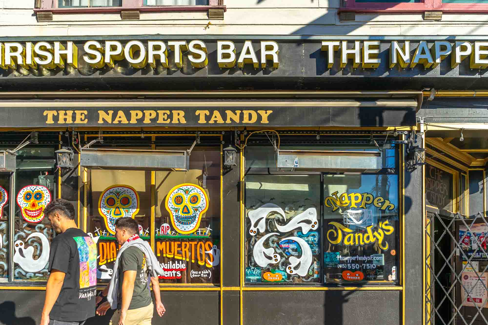

Street Photography
24th Street
The vibrance of 24th Street in San Francisco's Mission district — color, commerce, and community woven into the daily life of one of the city's most alive corridors. These images are a love letter to a neighborhood that refuses to be quiet.
View Collection